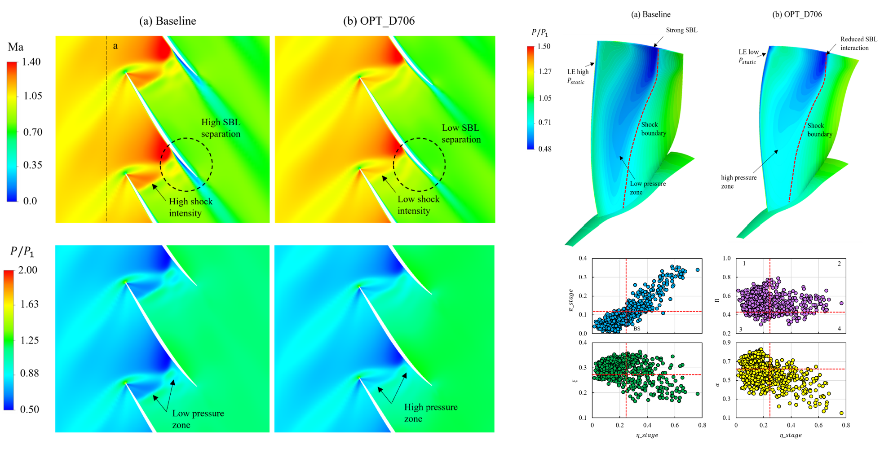
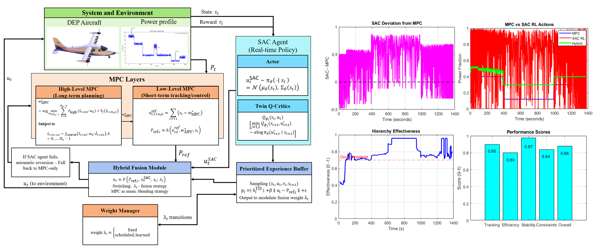

Aerospace propulsion systems
Gas turbine aerodynamics, heat transfer, electric and hybrid-electric propulsion architectures, and mission-level performance analysis for DEP, UAV, and VTOL systems.
Aerospace Propulsion Systems Laboratory
Design • Modeling • Optimization • Control


To shape the future of aerospace propulsion through intelligent multidisciplinary design, enabling cleaner, quieter, more efficient, and reliable air transportation.
APS Lab develops intelligent design, modeling, optimization, and control methods for next-generation aerospace propulsion systems.
Our research connects turbomachinery, fuel cells, thermal management, controls, and learning-based energy systems with modern computational design workflows.
Research Focus
Gas turbine aerodynamics, heat transfer, electric and hybrid-electric propulsion architectures, and mission-level performance analysis for DEP, UAV, and VTOL systems.
Projection-based reduced-order modeling, multi-fidelity methods, uncertainty quantification, and robust shape optimization for aircraft and gas turbine design.
Model predictive control, reinforcement learning, and energy-intelligent decision systems for hybrid-electric aircraft and low-carbon transport applications.